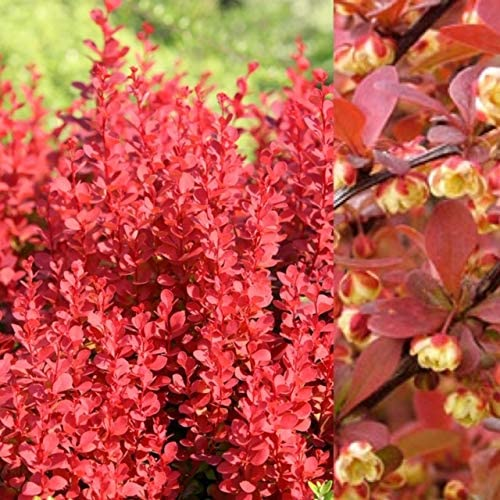




<p>
     <b>CN</b>: Japaneses barberry, 红叶小檗
                <br><b>BN</b>: Berberis thunbergii
    <br>
    <br> <a href="https://www.rhs.org.uk/plants/2183/Berberis-thunbergii/Details">RHS</a>
    <br> <a href="https://www.gardenersworld.com/how-to/grow-plants/how-to-grow-berberis/">gardenersworld</a>
    <br> <a href="https://www.crocus.co.uk/plants/_/berberis-thunbergii-f-atropurpurea-admiration-pbr/classid.2000018043/?affiliate=googleproductfeed&gclid=Cj0KCQjwo-aCBhC-ARIsAAkNQisrrzOhy9N76y2zryS2lAi668ZzPFM7Fhq6pClAgoo7HZX9xsZSQCQaAsubEALw_wcB">crocus 	</a>

</p>
<p>

</p>
<p> H * S:
